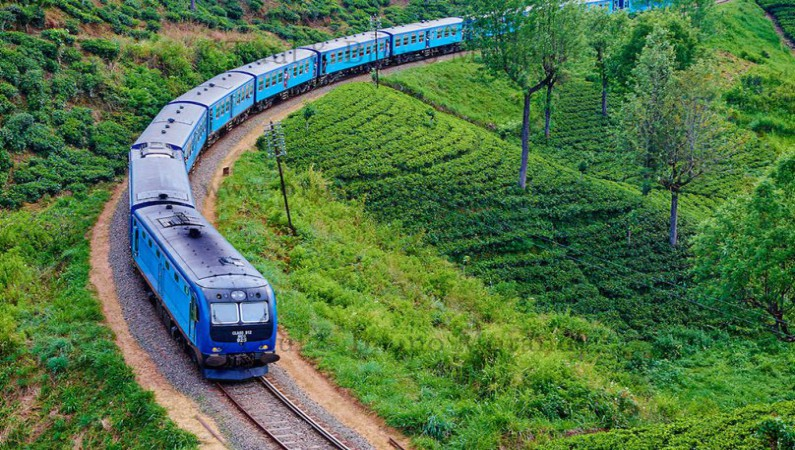
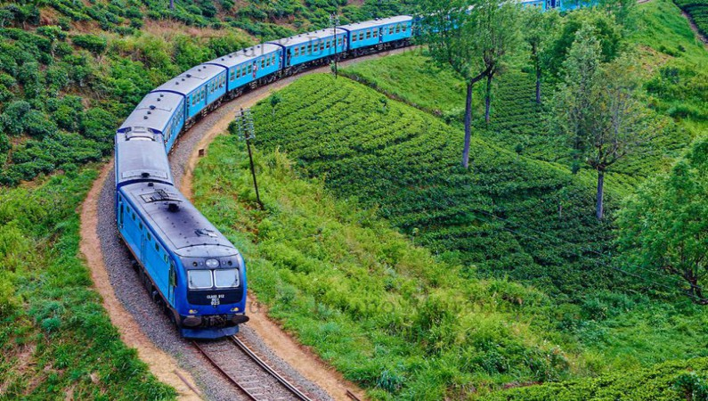

Rail was introduced in Sri Lanka in 1864 to transport coffee from plantations in the hill country district of Kandy to the port city of Colombo on its way to Europe and the world market. The coffee blight of 1871 destroyed many a fine plantation and tea replaced coffee. With the development of tea plantations in the 1880s, the joint-stock companies swallowed up the former individual proprietorship of the coffee era. Under corporate ownership and management control by companies, the process of production of tea became more sophisticated and needed more and more railways built to the Kandyan highlands. To send tea to Colombo and to transport labour, machinery, manure, rice, and foodstuff, etc to Kandy, another 100 miles of railways were constructed in the tea planting districts to serve the expanding tea domain. To serve the coconut plantations flourishing in the west, southwest and northwest coastal areas of the country, and the wet inland rubber plantations below the tea belt, railway lines were built in the wake of these agricultural developments. Thereafter, the need for cheap and safe travel in order to open up the hinterland of the country led to the expansion of the railway. An extension of the Main Line to Kandy was made north to the ancient city of Anuradhapura, going further north to Kankesanturai and west to Talaimannar to connect the island with South India by ferry, to bring Indian labour for the tea and rubber plantations, and also import rice and other food stuffs not indigenously produced in sufficient quantities. Towards the east, there was little economic justification to lay a line to the dry zone in that direction, but it became strategically worthwhile to lay a line to the natural harbour of Trincomalee and also connect it to the provincial capital of Batticaloa. These lines were laid with light (21 kg) section rails, as was the narrow gauge section to serve the rubber plantations east of Colombo, known as the Kelani Valley Line. Up country, a similar branch line was laid from Nanu Oya on the Main Line through very difficult terrain to serve the tea plantations around Nuwara Eliya. Track alignment was defined in this section about 140 years ago, when economic considerations were vastly different. The railways achieved modal superiority with speeds of 25 to 40 kmph in the hill country and 65 to 80 in the low country. Civil engineering criteria was influenced by the economic need to minimize cuts and fills, permitting gradients to 2 to 3 % and minimizing bridge lengths. As a result, the alignment here is winding with very sharp curves.
 
